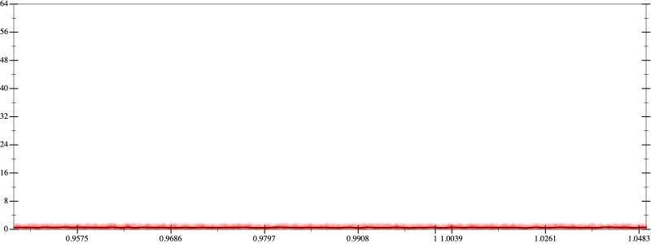
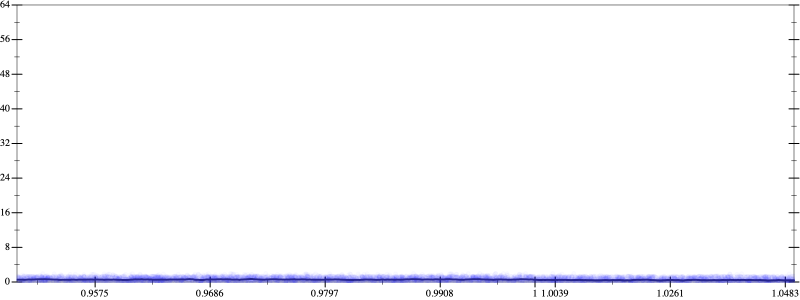
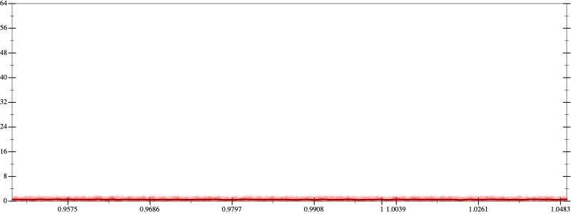
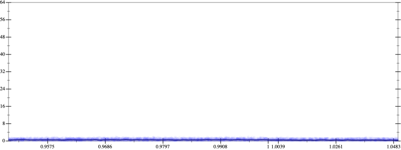

Initial program 0.5
\[-2.0 + 4.0 \cdot \left(x \cdot x\right)\]
- Using strategy
rm Applied flip-+0.6
\[\leadsto \color{blue}{\frac{-2.0 \cdot -2.0 - \left(4.0 \cdot \left(x \cdot x\right)\right) \cdot \left(4.0 \cdot \left(x \cdot x\right)\right)}{-2.0 - 4.0 \cdot \left(x \cdot x\right)}}\]
- Using strategy
rm Applied associate-*l*0.6
\[\leadsto \frac{-2.0 \cdot -2.0 - \color{blue}{4.0 \cdot \left(\left(x \cdot x\right) \cdot \left(4.0 \cdot \left(x \cdot x\right)\right)\right)}}{-2.0 - 4.0 \cdot \left(x \cdot x\right)}\]
Applied simplify0.5
\[\leadsto \frac{-2.0 \cdot -2.0 - 4.0 \cdot \color{blue}{\left({x}^{3} \cdot \left(x \cdot 4.0\right)\right)}}{-2.0 - 4.0 \cdot \left(x \cdot x\right)}\]
 
